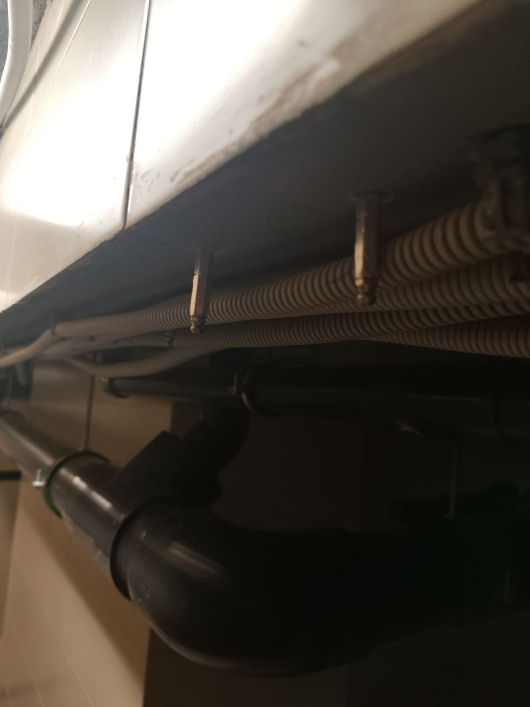

Введение
Протечки в бассейне — одна из самых частых и самых дорогих проблем эксплуатации. При этом в большинстве случаев причина возникает не внезапно, а постепенно: из-за отсутствия системного контроля, нерегулярного сервиса и работы оборудования вне расчетных режимов.
На практике проблема редко связана только с материалом гидроизоляции. Чаще это совокупность факторов: гидравлика, состояние чаши, ошибки монтажа, пропуски в обслуживании и отсутствие журнала измерений.
В этом материале мы разбираем полный путь — от первых признаков утечки до инженерной диагностики, выбора решения и оценки бюджета восстановления. Это позволяет не просто устранить проблему, а понять её первопричину и избежать повторения.
В АЛ Пулс мы работаем по инженерному принципу: сначала фиксируем фактическое состояние системы, затем проводим диагностику и тесты, после этого формируем решение и только затем выполняем работы.
Такой подход снижает риск повторных протечек, исключает лишние затраты и обеспечивает стабильную работу бассейна в долгосрочной перспективе.

Как определить место протечки
Поиск протечки в бассейне — это не разовая проверка, а последовательный процесс диагностики. Важно не просто найти место утечки, а понять причину, чтобы проблема не повторилась. Такой подход особенно важен для бассейнов с высокой нагрузкой: семейное использование, SPA-зоны, арендные объекты.
Любой простой в работе бассейна влияет на комфорт и стоимость эксплуатации, поэтому диагностика должна быть системной и понятной.
Практический алгоритм:
-
Соберите исходные данные
Зафиксируйте историю обслуживания бассейна: когда проводилась чистка, какие были вмешательства, как менялся уровень воды и химия. Это помогает сузить круг возможных причин. -
Проведите визуальный и инструментальный осмотр
Осмотрите чашу, швы, закладные элементы и оборудование. При необходимости используйте приборы контроля давления и утечек. -
Определите зоны риска
Особое внимание уделите местам соединений, трубопроводам, форсункам, скиммерам и участкам с возможными микротрещинами. -
Составьте план работ и приоритеты
Разделите задачи на срочные и второстепенные, чтобы сначала устранить критические утечки, а затем заняться восстановлением и профилактикой. -
Проверьте результат
После ремонта или временной стабилизации важно отследить уровень воды и подтвердить, что система держит рабочие параметры без падений.
Такой подход позволяет не просто устранить симптом, а найти и закрыть первопричину протечки, обеспечив стабильную работу бассейна и предсказуемые расходы на обслуживание.

Практика диагностики и устранения протечек
В гидроизоляции бассейна критично не только найти место протечки, но и правильно пройти весь путь: от диагностики до восстановления системы. Ошибки на любом этапе почти всегда приводят к повторным утечкам и дополнительным работам.
| Этап | Как правильно делать | Частая ошибка |
|---|---|---|
| Диагностика | Выполняют комплексную проверку: визуальный осмотр, тест уровня воды, контроль влажных зон, проверку швов, закладных и примыканий. При необходимости используют инструментальные методы поиска протечки. | Ориентируются только на видимые дефекты — трещины или мокрые пятна, игнорируя скрытые зоны утечки. |
| Выбор решения | Определяют причину протечки и подбирают метод устранения с учетом конструкции чаши, типа гидроизоляции и условий эксплуатации. Сравнивают варианты по надежности и сроку службы, а не только по стоимости. | Выбирают «быстрый ремонт» без анализа причины, что приводит к повторному появлению протечки. |
| Выполнение работ | Соблюдают технологию ремонта: подготовка основания, восстановление гидроизоляции, выдержка материалов и контрольные испытания. Каждый этап проверяется до перехода к следующему. | Ускоряют работы, нарушают технологические паузы и пропускают контрольные испытания. |
Такой подход позволяет не просто «заделать течь», а восстановить герметичность бассейна на уровне системы, чтобы исключить повторные протечки и скрытые дефекты в будущем.
FAQ — ответы на частые вопросы по гидроизоляции и протечкам
Ниже собраны практические ответы на вопросы, которые чаще всего возникают у владельцев бассейнов при появлении протечек или проблем с гидроизоляцией.
Сколько занимает устранение протечки?
Срок зависит от причины утечки и состояния чаши. Локальные дефекты устраняются за 1–3 дня, сложные случаи с нарушением гидроизоляции или закладных элементов могут требовать до нескольких недель, включая диагностику, ремонт и повторные испытания.
Можно ли устранить протечку поэтапно?
Да, в большинстве случаев работы выполняются поэтапно. Сначала проводится диагностика и стабилизация уровня воды, затем устраняются критические зоны, после чего выполняется восстановление гидроизоляции и контрольные испытания.
Нужно ли полностью сливать бассейн?
Не всегда. Слив воды требуется только при работах внутри чаши или при серьезных повреждениях гидроизоляции. Во многих случаях ремонт можно выполнить частично без полного опорожнения бассейна.
Можно ли определить место протечки без вскрытия отделки?
Да, сначала используются методы диагностики: измерение падения уровня воды, тесты давления, осмотр закладных элементов и трасс трубопроводов. Вскрытие отделки выполняется только при подтвержденной локализации проблемы.
Что чаще всего вызывает протечки?
Основные причины — повреждение гидроизоляции, ошибки монтажа закладных элементов, деформация чаши и износ швов. Также часто влияет неправильная эксплуатация и отсутствие регулярного технического обслуживания.
Когда лучше начинать ремонт гидроизоляции?
Чем раньше — тем лучше. Задержка приводит к увеличению зоны повреждения и росту стоимости восстановления. Оптимально проводить диагностику сразу при первых признаках падения уровня воды.
Получить консультацию и смету
Оставьте заявку: подготовим решение под ваш объект, сроки и бюджет.